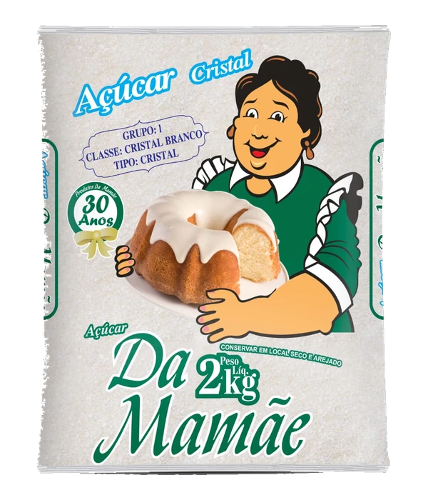

Pipoca caramelada
Crocante e douradinha, para acompanhar uma boa conversa ou a sessão de cinema em casa.
- Tempo total
- 25 min
- Rendimento
- 4 porções
- Dificuldade
- Intermediária
O que vamos usar
- ½ xícara de milho para pipoca
- 1 colher de sopa de óleo
- 1 xícara de açúcar cristal
- 50 g de manteiga
- ½ colher de chá de bicarbonato de sódio
- 1 pitada de sal
Modo de preparo
Aqueça óleo com 3 grãos. Quando estourarem, adicione o restante, tampe e abaixe o fogo. Agite pelas alças até os estouros espaçarem. Reserve.
Em panela limpa e seca, aqueça o açúcar até virar caramelo dourado. Desligue e incorpore manteiga e bicarbonato com cuidado: a mistura espuma.
Junte a pipoca e envolva rapidamente com uma espátula.
Espalhe em assadeira, salpique sal e espere esfriar por cerca de 10 minutos. Separe os pedaços somente depois de frios.
Versão adaptada com texto próprio. Referência culinária . Tempos e rendimentos são estimados.
Para esta receita recomendamos.

Outras receitas para experimentar.
 35 min
35 minFeijão tropeiro
Feijão, farinha e temperos se encontram em um prato generoso, com a cara do almoço de domingo.
Ver receita 30 min
30 minArroz com legumes
Colorido, soltinho e fácil de combinar. Um jeito simples de renovar o arroz de todo dia.
Ver receita 20 min
20 minFarofa de banana
O encontro da farinha crocante com a doçura da banana. Vai bem com carnes, peixes e o seu prato favorito.
Ver receita